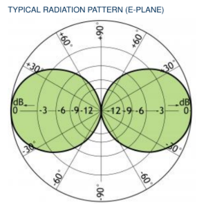
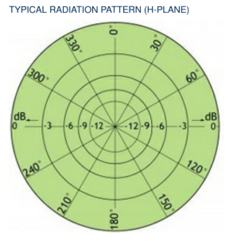
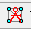

Liên lạc thoại liên tục
Đảm bảo thông tin liên lạc thoại Không – Địa (VHF Air-Ground) ổn định, không gián đoạn trong toàn bộ bán kính điều hành được giao cho kiểm soát viên không lưu.
Đánh giá vùng phủ sóng thoại Không – Địa (VHF Air-Ground) bằng mô phỏng truyền sóng trên mô hình địa hình số, đối chiếu tiêu chuẩn ICAO và trực quan hóa kết quả trên bản đồ tương tác.
Vì sao việc đánh giá tầm phủ VHF tại khu vực Long Thành là yêu cầu bắt buộc.
Đảm bảo thông tin liên lạc thoại Không – Địa (VHF Air-Ground) ổn định, không gián đoạn trong toàn bộ bán kính điều hành được giao cho kiểm soát viên không lưu.
Vùng phủ sóng tin cậy là điều kiện tiên quyết cho an toàn: mọi tàu bay trong vùng trời kiểm soát phải duy trì được liên lạc hai chiều với đài kiểm soát.
Đáp ứng yêu cầu kiểm tra, nghiệm thu công trình và làm cơ sở khoa học để tối ưu hóa vị trí, độ cao đặt anten trạm phát VHF.
Yêu cầu cốt lõi: Độ tin cậy tín hiệu (Signal Availability) trong vùng trời kiểm soát phải đạt từ 95% trở lên theo khuyến cáo của ICAO, để bảo đảm dịch vụ thông tin liên lạc hàng không liên tục.
Các công cụ đánh giá tầm phủ và những yếu tố vật lý chi phối lan truyền sóng VHF.
Sử dụng phần mềm mô hình hóa truyền sóng (Radio Mobile) trên dữ liệu địa hình số để dự đoán vùng phủ trước khi triển khai thực địa.
Bay kiểm tra kỹ thuật (Flight Inspection) đo trực tiếp cường độ tín hiệu thực tế trên tàu bay tại các vị trí và mực bay khác nhau.
Kết hợp hai phương pháp: Mô phỏng được dùng để khoanh vùng và tối ưu thiết kế; bay kiểm tra được dùng để xác nhận, hiệu chuẩn kết quả mô phỏng tại các điểm trọng yếu.
Vật cản tự nhiên (núi, đồi) và nhân tạo (nhà cao tầng khu vực lân cận sân bay) gây che chắn, phản xạ và làm suy giảm tín hiệu.
Độ thông thoáng của vùng Fresnel quyết định chất lượng & cường độ tín hiệu. Vật cản lấn vào vùng Fresnel thứ nhất gây suy hao đáng kể dù vẫn còn tầm nhìn thẳng.
Bán kính vùng Fresnel r (m), khoảng cách d (km), tần số f (GHz).
Sóng VHF lan truyền theo tầm nhìn thẳng (Line-of-Sight), bị giới hạn bởi độ cong Trái Đất. Tầm phủ tăng theo căn bậc hai độ cao của anten phát và máy thu trên tàu bay.
Khoảng cách LOS d (km), độ cao h (m) — đã tính hệ số K = 4/3.
Khí quyển làm sóng vô tuyến bị bẻ cong nhẹ xuống dưới, mở rộng tầm nhìn vô tuyến so với tầm nhìn quang học. Áp dụng hệ số bán kính Trái Đất hiệu dụng:
K = 4/3 cho điều kiện khí quyển tiêu chuẩn.
Cơ sở pháp lý và kỹ thuật quốc tế cho việc quy hoạch và đánh giá tầm phủ VHF.
Aeronautical Telecommunications — Aeronautical Radio Frequency Spectrum Utilization
Quy định về sử dụng phổ tần số vô tuyến điện hàng không, bao gồm phân bổ kênh VHF (giãn cách 25 kHz / 8.33 kHz) và yêu cầu kỹ thuật với hệ thống thoại Không – Địa.
Handbook on Radio Frequency Spectrum Requirements for Civil Aviation
Hướng dẫn chi tiết về quy hoạch tần số và phương pháp tính toán tầm phủ nhằm bảo đảm dịch vụ thông tin liên lạc, bao gồm tiêu chí bảo vệ và tái sử dụng tần số.
Cường độ trường tối thiểu (Minimum field strength) cần đảm bảo trong vùng trời kiểm soát theo khuyến cáo ICAO.
Độ tin cậy tín hiệu (Signal Availability) tối thiểu để dịch vụ liên lạc được coi là liên tục, ổn định.
Liên lạc hai chiều (đường lên & đường xuống) đều phải đạt ngưỡng — đánh giá cả Tx và Rx.
Phần mềm mô phỏng truyền sóng vô tuyến dựa trên mô hình hình học địa hình số.
Radio Mobile là phần mềm miễn phí mô phỏng lan truyền sóng vô tuyến trên mô hình địa hình số (DTM). Phần mềm cho phép tạo mạng (Network), bố trí các trạm (Units), cấu hình hệ thống thu/phát và tính toán vùng phủ theo cường độ tín hiệu trên nền bản đồ địa hình thực.
Radio Mobile sử dụng mô hình Longley-Rice / Irregular Terrain Model (ITM). Đây là mô hình tối ưu và chuẩn xác nhất cho băng tần VHF hàng không dân dụng vì:
Hướng dẫn từng bước (step-by-step) dành cho nhân viên kỹ thuật thực hiện trên Radio Mobile.
Giới thiệu khái niệm: Anten Omni VHF hàng không CXL 3-1LW được đặc trưng bởi hai giản đồ phóng xạ chính — E-plane và H-plane. Hiểu rõ các biểu diễn này sẽ giúp đánh giá vùng phủ sóng một cách chính xác.
Elevation plane — Giản đồ theo chiều dọc (phương thẳng đứng) thể hiện tính chất phóng xạ của anten từ góc ngẩng -90° đến +90°. Dùng để đánh giá độ cao của búp sóng chính và mức tế cực.

Azimuth plane — Giản đồ theo mặt phẳng ngang thể hiện tính vô hướng 360° của anten. Kiểm tra sự cân đối phóng xạ quanh trục dọc và phát hiện các dạo động về gain theo phương vị.


Bước khởi đầu: Trước khi bắt đầu mô phỏng, cần cài đặt phần mềm Radio Mobile.
Thiết lập nền bản đồ: Map Properties là cấu hình nền địa hình số cho mô phỏng.
 trên thanh công cụ.
trên thanh công cụ.• Mục Centre: Xác định tọa độ trung tâm vùng xét tầm phủ (ở đây có thể lấy tọa độ sân bay Long Thành).
• Size (pixel): Chọn độ phân giải cho cửa sổ map (thường 600 × 600 hoặc cao hơn).
• Size (km): Chọn chiều dài và chiều rộng để hiển thị phần diện tích bản đồ trên cửa sổ.
Ví dụ: Nếu tầm phủ lớn nhất ước tính có đường kính 300 km, nên chọn kích thước lớn hơn khoảng 3 lần (ví dụ 1000 km) để đảm bảo hiển thị được vùng phủ trong không gian cửa sổ. Nếu set nhỏ hơn 300 km, khi hiển thị tầm phủ có thể không được hiển thị hết trên cửa sổ map, dẫn tới mất một phần vùng phủ khi lưu.
• Nhấn Extract: Phần mềm sẽ tự động tải tài nguyên bản đồ địa hình số từ vệ tinh SRTM.
Khai báo các điểm trạm: Unit là các trạm phát/thu cần xét trong mô phỏng.
◆ Đối với Trạm phát VHF Main:
◆ Đối với VHF trên tàu bay:
Sau khi nhập đủ số liệu cho mỗi Unit, nhấn OK.
Định nghĩa mạng VHF: Network là tập hợp các Units và các thông số kỹ thuật của mạng.

trên thanh công cụ.• Net name: Đặt tên network, ví dụ "VHF LTA" và dải tần số trong mạng (118–137 MHz), phân cực đứng (Vertical).
• Mode of variability: Chọn Broadcast, 95% of time, 95% of locations, 70% of situations
Ý nghĩa: Hệ thống yêu cầu đảm bảo tín hiệu hoạt động tốt tối thiểu ổn định trong 95% thời gian, tại 95% các vị trí trong vùng phủ sóng, và đạt độ tin cậy thuật toán ổn định tình huống là 70% (đối với hàng không, đây là mức thiết lập an toàn và hợp lý).
• Surface refractivity (N-Units): Độ khúc xạ bề mặt — chọn 350 hoặc dao động từ 320–360, phản ánh điều kiện khí quyển ở vùng nhiệt đới nóng ẩm như Việt Nam. Độ ẩm và nhiệt độ cao làm tăng mật độ hạt hơi nước, khiến chùm tia sóng bị bẻ cong mạnh hơn về phía mặt đất.
• Ground conductivity (S/m): Độ dẫn điện của mặt đất — chọn 0.015, là mức trung bình khá phù hợp cho vùng đồng bằng, trung du hoặc khu vực đất đỏ có độ ẩm tốt.
• Relative ground permittivity: Hằng số điện môi tương đối của mặt đất — chọn 22, chứng tỏ loại đất có độ ẩm rất cao, quyết định hệ số phản xạ của mặt đất khi sóng chạm vào sườn đồi và chướng ngại vật.
• Climate: Chọn Maritime sub-tropical — đây là sự cân bằng hoàn hảo giữa lý thuyết mô hình và thực tế khí hậu tại Long Thành, vừa phản ánh độ ẩm cao của vùng gió mùa sát biển, vừa mang lại kết quả mô phỏng độ tin cậy cao, sát với điều kiện vận hành thực tế.
Định nghĩa thiết bị phát/thu: System là cấu hình chi tiết cho máy phát (Transmitter) và máy thu (Receiver), bao gồm công suất, tần số và đặc tính anten.
Vào tab 'System' trên cửa sổ 'Network Properties', tạo profile system cho từng máy phát và máy thu, điền các thông số về công suất phát (TX power), độ lợi anten (Antenna gain), hệ số mất mát (Cable loss) và các tham số khác theo đặc tính thiết bị thực tế của trạm Long Thành.
Kết nối các thành phần: Membership là tab thiết lập liên kết giữa Network, Units và System.
Trên cửa sổ Network Properties, vào tab 'Membership'. Trong network "VHF LTA", chọn các unit từ danh sách bao gồm VHF tại trạm phát và các VHF Rx máy bay theo từng độ cao:
• Chọn từng unit (bôi xanh) trong danh sách, sau đó trên mục Member of VHF LTA thiết lập:
Tính toán vùng phủ sóng: Đây là bước chính tiến hành mô phỏng truyền sóng để vẽ vùng phủ.
• Centre unit: Chọn máy phát VHF tại trạm (Tx unit).
• Mobile unit: Chọn VHF thu tại độ cao muốn xét (ví dụ: máy bay ở FL100 hoặc FL200).
• Network unit: Tự hiện ra khi chọn Mobile unit tương ứng.
• Link Direction: Chọn "Worst case" để đánh giá trường hợp xấu nhất (điều kiện bất lợi nhất).
• Plot: Thiết lập màu sắc và kiểu viền cho vùng phủ trên bản đồ.
• Threshold: Chọn ngưỡng thu tối thiểu: -107 dBm: Ngưỡng phát hiện tối thiểu tại đầu vào anten . -83 dBm: Tương đương 75 μV/m theo tiêu chuẩn ICAO, đảm bảo thoại ra đạt chất lượng tốt.
Vẽ và lưu kết quả: Sau khi cấu hình đầy đủ, tiến hành vẽ vùng phủ.
Xuất và trực quan hóa trên Google Earth: Bước cuối cùng để nhúng vùng phủ trên nền bản đồ địa lý toàn cầu.
💡 Để tính toán kết quả tầm phủ (km hoặc NM): Có thể dùng thước đo trên Radio Mobile hoặc trên Google Earth Pro để đo từ tâm đài ra viền vùng phủ, sau đó tính toán khoảng cách tính bằng km hoặc Nautical Miles (NM).


Trực quan hóa vùng tầm phủ trên bản đồ tương tác và hướng dẫn xuất file KMZ.
Tương tác: dùng con lăn chuột để phóng to / thu nhỏ, kéo để di chuyển, bật/tắt các lớp mực bay bằng công tắc phía trên. Nhấp vào vùng phủ hoặc trạm để xem thông tin.